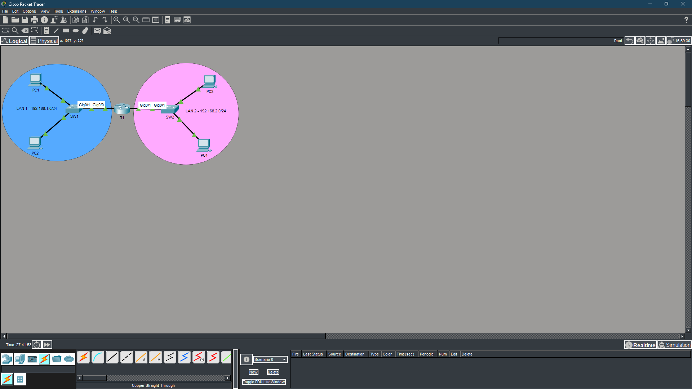
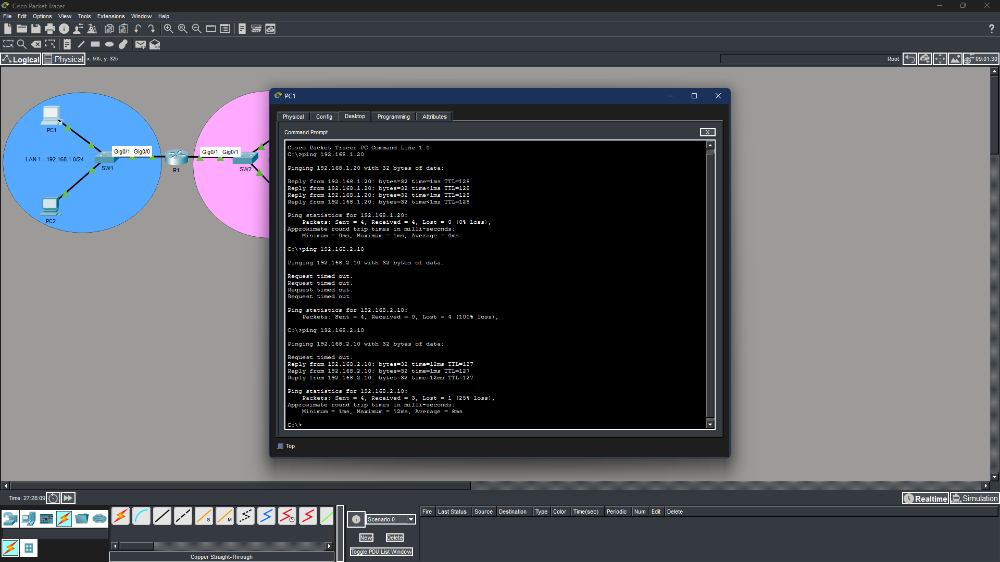
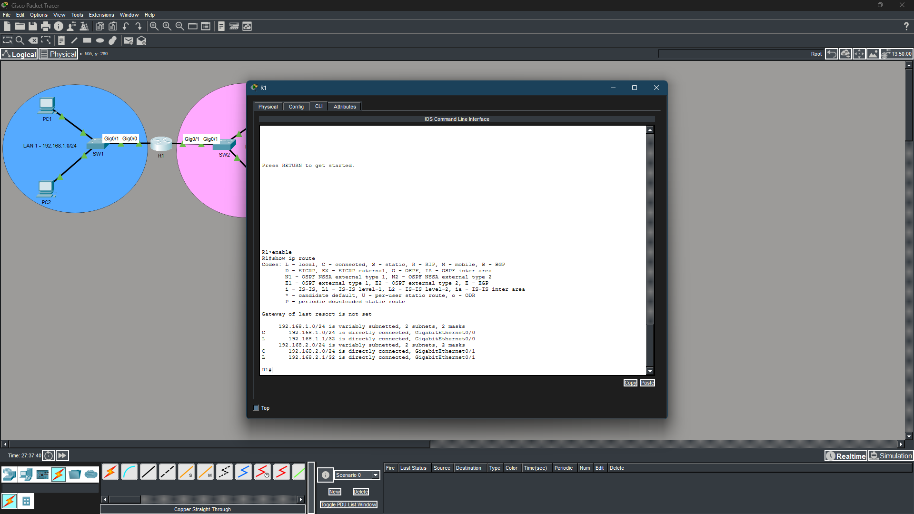

cat objectives.txt
cat tools.txt
| TOOL / TECHNOLOGY | PURPOSE |
|---|
cat skills.txt
cat topology.txt
LAN 1 — 192.168.1.0/24 LAN 2 — 192.168.2.0/24
[PC1: 192.168.1.10] ──┐ ┌── [PC3: 192.168.2.10]
├──[SW1]──[G0/0: .1.1]─[R1]─[G0/1: .2.1]──[SW2]──┤
[PC2: 192.168.1.20] ──┘ └── [PC4: 192.168.2.20]
| DEVICE | INTERFACE | IP ADDRESS | SUBNET MASK | DEFAULT GATEWAY |
|---|---|---|---|---|
| PC1 | NIC | 192.168.1.10 | 255.255.255.0 | 192.168.1.1 |
| PC2 | NIC | 192.168.1.20 | 255.255.255.0 | 192.168.1.1 |
| PC3 | NIC | 192.168.2.10 | 255.255.255.0 | 192.168.2.1 |
| PC4 | NIC | 192.168.2.20 | 255.255.255.0 | 192.168.2.1 |
| R1 | G0/0 | 192.168.1.1 | 255.255.255.0 | — |
| R1 | G0/1 | 192.168.2.1 | 255.255.255.0 | — |
| SW1 | — | — | — | — |
| SW2 | — | — | — | — |
cat methodology.txt
cat results.txt
ls ./evidence/



cat lessons_learned.txt